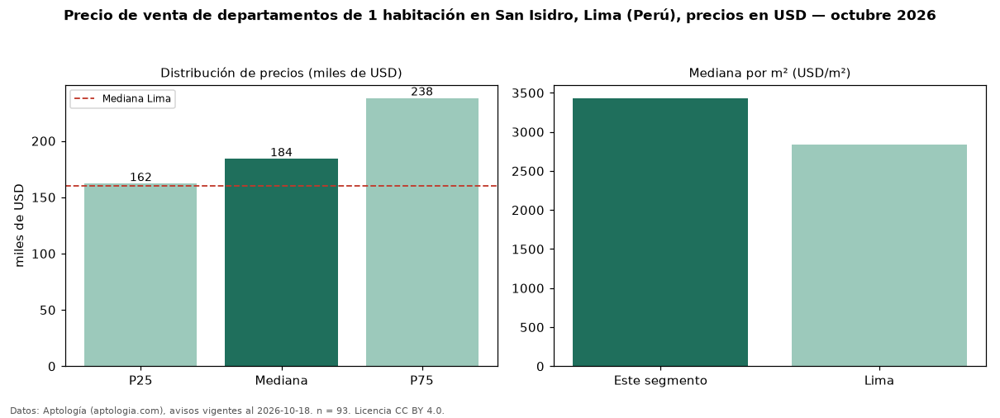

Precio de venta de departamentos de 1 habitación en San Isidro, Lima (Perú), precios en USD — octubre 2026
USD 184.000 es el precio mediano de departamentos de 1 habitación en venta en San Isidro, Lima (Perú) (n = 93 avisos). Frente a la mediana de Lima para departamentos de 1 habitación (USD 160.000), queda 15 % por encima. Por metro cuadrado, la mediana es USD 3.432/m² (n = 92 avisos con área), 21 % por encima de Lima (USD 2.833/m²). Son 16 % de los 588 avisos de departamentos en venta de la zona, cuya mediana general es USD 435.500 (−58 %). Con el precio por m² de alquiler del mismo segmento (USD 14,55/m² al mes), la rentabilidad bruta implícita es 5,1 % anual (aproximación con medianas de ofertas distintas). El área mediana anunciada es 52 m². La mitad central de los avisos va de USD 162.000 a USD 238.000 (razón 1,5), una dispersión moderada. Datos: Aptología (aptologia.com), CC BY 4.0 — https://www.aptologia.com/pe/venta/lima/san-isidro. Archivos: PDF, CSV con las cifras y gráfica PNG.

| Avisos únicos | 93 |
|---|---|
| Percentil 25 | COP 162.000 |
| Mediana | COP 184.000 |
| Percentil 75 | COP 238.000 |
| Mediana por m² | COP 3.432 |
Fuente: avisos vigentes de portales inmobiliarios recopilados por Aptología, deduplicados (mínimo 30 avisos únicos por celda). Precios pedidos, no cerrados. Fecha: 2026-10-18.